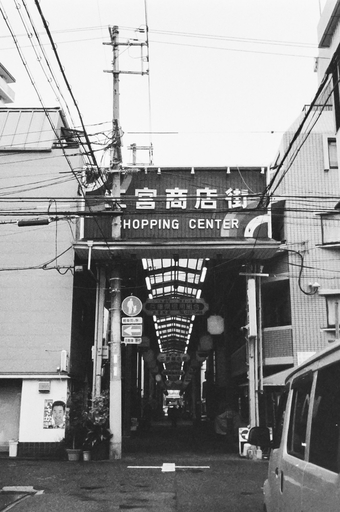
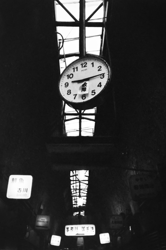

11 月 21 日 ( 木 )
ILFORD HP5+ の分ができたものの
やっぱりね、ILFORD HP5+ での撮影って難しいと思うのです。5 年以上前から試行錯誤を繰り返しているのですが、どうにもこうにも眠いネガしか量産できていません。

Kodak ColorPlus 200
後処理でデノイズ、コントラスト調整
二宮商店街にて
上の画像も下の画像も Lightroom でガッツリ補正をしています。どうにもこうにもいいネガを得る方法論がわかりません。

Kodak ColorPlus 200
後処理でデノイズ、コントラスト調整
二宮商店街にて
やはり ILFORD HP5+ は難しすぎます。まだまだ長巻のフィルムが冷蔵庫に眠っているので途方に暮れています。言い方を替えれば撮影・現像テストし放題？
せっかくの PENTAX 17 体験会だったので Fuji の ACROS を卸せばよかったと後悔しています。
- Category :
- #日記
- #blog
- #pentax17
- #IlfordHP5Plus
ILFORD HP5+ の最適解を chatGPT に訊いてみた
ILFORD HP5+ での撮影で 5 年以上悩み続けています。いたるところに何度も書いてますが、とにかく眠くてシャープさに欠けるネガしか得られていません。
そもそも HP5+ の公称感度である ASA 400 がとても怪しいということで HP5+ の実効感度も調べてみました。パソコンでいろいろ検索したのですが、データがまったく見当たりません。
手詰まり状態になってしまったのですが、ふと思いついたのです。これこそ chatGPT に訊ねてみればいいのでは？と。
以下そのやり取りです。検証は後日やりたいと思います。
[me]
ILFORD HP5 Plus の 135 サイズを使っています。どうやっても眠いネガしか作れません。適切な撮影の設定方法と現像方法が知りたいです。現像液には rodinal を使用しています。
[chatGPT]
ILFORD HP5 Plus で眠い（コントラストが不足している、またはディテールが弱い）ネガになってしまう場合、いくつかの原因と解決方法が考えられます。以下に、撮影設定と現像のポイントを挙げます。
撮影設定のポイント
- ISO設定
- HP5 Plus は ISO 400 のフィルムですが、状況に応じてEI（露出インデックス）を調整して撮影することが重要です。
- シャープなネガを目指す場合: EI 320 または EI 250
に設定すると、やや露出を増やして暗部のディテールを強調できます。
- コントラスト重視の場合: EI 500～800
で撮影し、現像時に増感処理を行うと、コントラストが強調される可能性があります。
- 露出設定
- 露出計の測定結果に従うだけでなく、被写体のハイライトとシャドウを意識して調整しましょう。
- ハイコントラストの場面ではシャドウに露出を合わせると眠さを抑えられます。
- フィルターの活用
- 赤フィルターやオレンジフィルターを使用すると、コントラストが向上します（特に風景やポートレートで効果的）。
現像時の工夫
Rodinal は鋭い粒状感を持つ一方で、コントラストやシャドウの深みが不足しがちです。以下の点を調整してみてください。
- 希釈と現像時間
- 標準の 1+25（濃い希釈）よりも、1+50 や
1+100（薄い希釈）を試すと、トーンが滑らかになります。
- 現像時間は、通常の推奨時間より 10～15% 短縮するか、逆に 10%
延長して結果を比較してください。
- 攪拌方法
- 過度な攪拌はハイライトを飛ばし、コントラストを損なうことがあります。
- 初めの 30 秒は連続攪拌、その後は 1
分ごとに数回攪拌する程度に抑えます。
- 温度管理
- 温度は
20℃を基準に安定させることが理想です。温度の変動が仕上がりに影響を与える可能性があります。
- フィルム増感
- 増感（ISO 800～1600）するとコントラストが増します。増感時には、1+25
の濃い希釈で現像を行うと良い結果が得られることがあります。
その他のヒント
試してみた結果や、具体的な改善したいポイントがあれば、さらに詳細なアドバイスをお伝えします！
[me]
カメラの設定を ASA 200 にするのはやりすぎですか？
[chatGPT]
カメラの設定を ASA 200（EI 200）にするのは、過剰ではありませんが、少し注意が必要です。EI 200 に設定すると、HP5 Plus を一段分「露出過多」にすることになり、シャドウのディテールがより豊かになる一方で、ハイライトが飽和するリスクがあります。
ASA 200 の効果と考慮点
- 効果
- シャドウ部分にしっかり露光されるため、暗部の眠さが改善される可能性があります。
- ネガが濃くなり、プリント時に濃密なトーンが得られやすくなります。
- 注意点
- ハイライト部分（明るい部分）が飽和してディテールが失われる可能性があります。
- Rodinal のような高コントラストの現像液では、ハイライトをさらに強調してしまうため、慎重な現像が必要です。
ASA 200 に設定する場合の現像の工夫
- 希釈率を調整する
- Rodinal を 1+50 以上に薄めることで、ハイライトの飽和を防ぎつつトーンを滑らかにできます。
- 現像時間を短縮する
- 通常の現像時間から 10～20% 短縮することで、ハイライトの飛びを抑えられます。
- 攪拌を抑える
- 攪拌を控えめにすることで、ハイライトが強くなりすぎるのを防ぎます。
試してみる方法
- まず 1～2 本を ASA 200 で撮影し、希釈率や現像時間を調整しながら結果を比較してください。
- ハイライトが強すぎる場合は、ASA 250 または 320 に設定するなど、少し戻して調整するのも良い方法です。
ASA 200 はやりすぎではありませんが、現像でのコントロールが非常に重要になります。丁寧に管理すれば、濃密でシャープなネガを得られる可能性があります！
[me]
カメラの ASA ダイヤルを触る触らないは別にして +1/3EV 〜 +1/5EV にすると良好な結果が得られる可能性があるって理解でいいですか？
[chatGPT]
その理解で合っています！HP5 Plus の場合、+1/3EV ～ +1/5EV の露出補正（実質的にやや露出過多）を行うことで、以下のような効果が期待できます。
+1/3EV ～ +1/5EV のメリット
- シャドウのディテールが豊かになる
- 少し多めに露光することで、シャドウ部分に十分な露光量が確保され、眠さを軽減できます。
- コントラストが自然に改善
- Rodinal
のような高コントラスト現像液では、シャドウが「詰まる」ことがありますが、適度な露出過多でこの問題を緩和できます。
- 過剰なハイライト飛びを防ぐ
- +1/3EV ～ +1/5EV
は、通常のネガフィルムの寛容さの範囲内に収まり、ハイライトが飽和しにくいです。
設定方法の選択肢
- ASA ダイヤルをそのままにして補正する場合
- 露出計で測った値よりも、シャッタースピードを1/3～1/2段遅くするか、絞りを少し開けるだけで調整可能です。
- ASA ダイヤルを変更する場合
- ASA 400 のフィルムを ASA 320～350 に設定することで、自動的に+1/3EV
～ +1/5EV の補正が加わります。
現像時の注意
+1/3EV ～ +1/5EV に露出を増やした場合、現像では以下を考慮してください。 1. 標準現像時間の維持 - 現像時間を通常どおりにすれば、シャドウがしっかり出つつ、ハイライトも適切に保たれます。
- 薄い希釈で柔らかく仕上げる
- Rodinal を 1+50 で使用すると、トーンが滑らかになりやすいです。
結論として、+1/3EV ～ +1/5EV の露出増加は、特にシャドウが弱い（眠い）と感じる状況で非常に有効です。ただし、極端に増やしすぎない範囲での調整がポイントです！
[me]
Rodinal での現像は以下の感じでいいのでしょうか？
- Rodinal 希釈 1+50
- 現像時間 11 分
- 撹拌 60/60/3
[chatGPT]
Rodinal の設定として、以下の方法は一般的であり、ILFORD HP5 Plus の現像に適しています。ただし、最適な結果を得るためには微調整が必要かもしれません。
あなたの設定の考察
- Rodinal 希釈 1+50
- 希釈 1+50 は、シャープな粒状と滑らかなトーンのバランスが取れる、非常に適切な選択です。
- HP5 Plus（EI 400）では、この希釈が特におすすめです。
- 現像時間 11 分
- ILFORD の公式推奨では、1+50 希釈で 20℃の条件下で 13 分が基準ですが、11 分は少し短めです。
- 短くすることでハイライトの飛びを防ぎ、コントラストを抑えられます。
- ただし、シャドウディテールが不足すると感じる場合は、12 分程度に調整してみてください。
- 撹拌 60/60/3
- 初めの 60 秒: 持続的な攪拌は薬液を均一に浸透させるために理想的です。
- その後 60 秒ごとに 3 回攪拌: 過剰な攪拌を避けつつ、ハイライトが強く出るのを防ぐ適切な頻度です。
- これは、粒状感をシャープに保ちながらトーンを滑らかに仕上げる良い方法です。
補足アドバイス
- 温度管理
- 温度が 20℃以上になると現像が速く進むため、厳密に 20℃を保つことが重要です。
- 温度が安定しない場合は、途中で水浴で冷却すると効果的です。
- 仕上がりの確認
- シャドウが薄すぎる場合: 現像時間を 1 分延長。
- ハイライトが強すぎる場合: 現像時間を 30 秒短縮、または攪拌を 90 秒ごとに減らす。
- テスト
- 同じ設定で複数のフィルムを現像し、トーンやコントラストを確認すると、自分に最適な時間が見つかります。
試す価値のある代替設定
- 希釈 1+25（コントラストが欲しいとき）
- 希釈 1+100（より柔らかなトーンが欲しいとき）
- 現像時間: 18～20 分
- 撹拌: 60/180（3分に1回の攪拌）
あなたの設定は「標準的な範囲内」で、十分に良い結果が得られる可能性があります。ネガが少し眠いと感じる場合、攪拌を少し減らすか、現像時間を微調整してみてください。
- Category :
- #日記
- #blog
- #IlfordHP5Plus
- #Rodinal